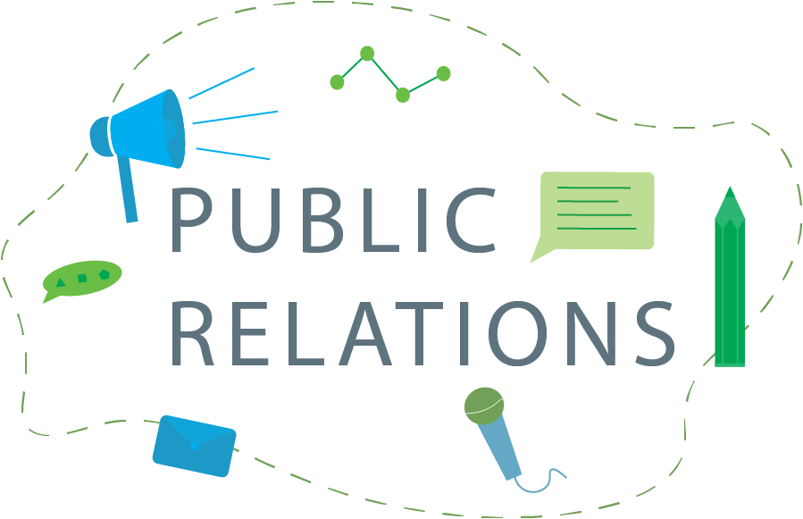

Lea Emerlyn
Ballroom Public Relations
Creating Graphic Designs for Ballroom Dance Club

Group Mates:
Individual work
Roles:
Graphic Designer, Public Relations
Duration:
April 2020 — Current
Tools:
Adobe Illustrator, Adobe Photoshop
INTRODUCTION
As a public relations chair, I am responsible for creating all the marketing materials for major club events as well as designing various content such as t-shirts, club banners and posters.
I chose to run for Public Events chair because I wanted to practice using graphic design tools. When I was elected, I bought a Adobe Creative Cloud Subscription and started with Adobe Illustrator.
DESIGNS
Rush Banner

This is the first thing I created with Adobe Illustrator. I did not have any prior experience with using vectors, and was afraid that it would not turn out the way I wanted.
Our club’s banner has been hanging on its last threads since a semester ago, so it was about time we got a new one. Since Rush is the biggest event we host, we decided that having one banner advertising Rush would help with recruitment.
I traced an image of a couple from our team dancing during a competition. The gray background and the Carnegie Mellon University logo is from our school’s official website.
Improvements:
- I wish that I could add more detail to the dress as well as the suit. It currently looks very flat. At the time, I didn’t know how I could make wrinkles on clothes look natural.
- The flowers on the dress are not as neat as I would have liked. I tried creating a brush with the flowers, but Adobe Illustrator does not allow me to create brushes that have a gradient. I just decided to place the larger flowers individually by copying and pasting. The smaller snowflakes were made with a brush and randomizing the size, rotation and spread.
- Fingers… I’ll have to work on that a lot.
General Banner

This is just a general banner that our club can use for any occasion. We will use this for club fairs, tabling during lessons and any other events.
*I did not design the image in the middle.* The couple dancing in the middle was created by a previous Public Relations Chair. This image has been on our team jackets and previous banners, so I think that we should keep it consistent this year. The plaid background is from Carnegie Mellon University’s official website. The red background color is also one of our school’s colors.
I had some difficulty with the small logo at the bottom. Because the file was saved as a black image, I wanted to change it to white to make it contrast with the background. I tried doing that in Illustrator using the color picker, but then that failed miserably. I did some research on how I can do this and read that photoshop can do this pretty easily.
Scotch Ball Banner

Every year, our club hosts an event with almost 150 guests. This event is to celebrate the year and to wish our seniors good luck after graduation.
I wanted to keep things minimal for this poster. I like the navy blue contrast with the white objects. I also think that the gold complements the background. Each object in the circle is something related to ballroom dancing. There are dresses, shoes, bows and lots of shiny stuff.
T-Shirt Design


Previous years, we always had short sleeve shirts for our club members. I thought that maybe we should change things up a little and have long sleeves because Pittsburgh gets quite cold. Other people who had experience selling club shirts told me that long sleeve shirts are also more popular.
There are a couple of different colors that I was thinking about having. The board members ultimately decided on the black color. For the design, I was inspired by the TV show Friends. It is a little cheesy, but I want to show that the ballroom dance club is a welcoming family where you can make tons of friends :) I replaced the dots in the middle with ballroom related items such as dresses, vests and shoes. The back is for general advertising.
Fall Rush Design


Every semester, the Ballroom Dance Club would host a rush event. Unlike a sorority or fraternity rush, it is not required for members to attend. This event is primarily for recruitment and showing others what ballroom dancing is like. There are four nights of rush. It is usually on the first two Mondays and Wednesdays of school. Each night, our students or professional instructors will teach two different dances and perform two showcases. Afterwards, we have a session of social dancing and games.
The first poster I created was inspired by the orange tones of fall. I used both Photoshop and Illustrator to create the design in the circle. The background was made by using the mesh tool and adjusting the pattern and color combinations in Illustrator. I really wanted the words Rush to stand out, so I added an orange background on top of the circle and some drop shadows to the word.
The second poster I created started off as practicing how to use Photoshop. The photo that I used too small for the dimensions of our rush cards, so I extended the photo vertically. Then, I wanted to create the effect of some leaves being on top of the border and some behind. I brought the result into illustrator and vectorized the image by using image trace. The trouble I had with this design was that it was difficult to fit text onto this poster. There is a lot of information that I wanted to put on, but there were space limitations.
Unfortunately, for the Fall 2020 semester, rush will not be happening, but I still created some posters for the event.